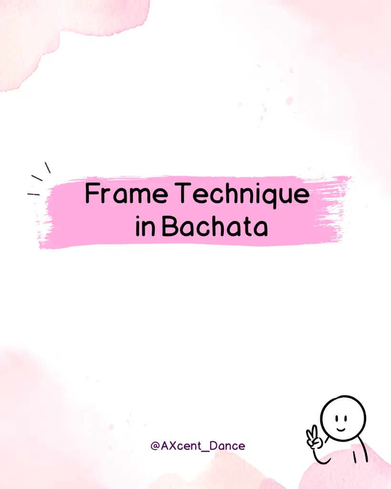

Bildung · Empfohlen
Rahmen-Technik im Bachata: Tanz-Tipps Episode 1
Kleine Dinge machen einen grossen Unterschied. Lerne die korrekte Rahmen-Technik, um dein Leading und Following sofort zu verbessern.
Ganzen Artikel lesen